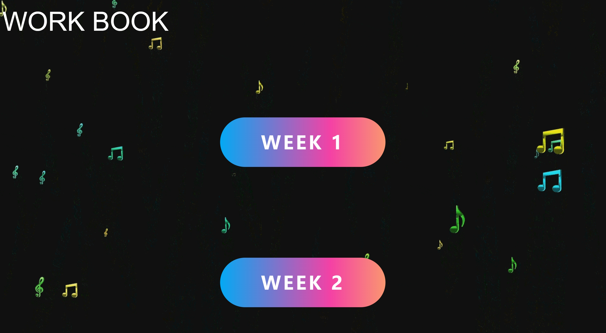
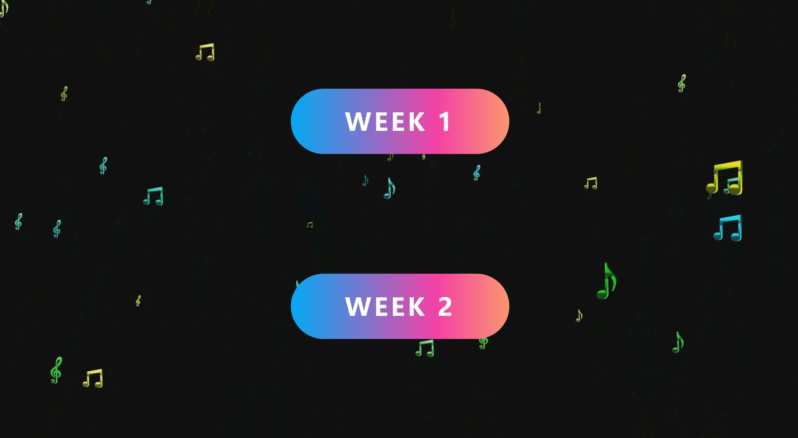
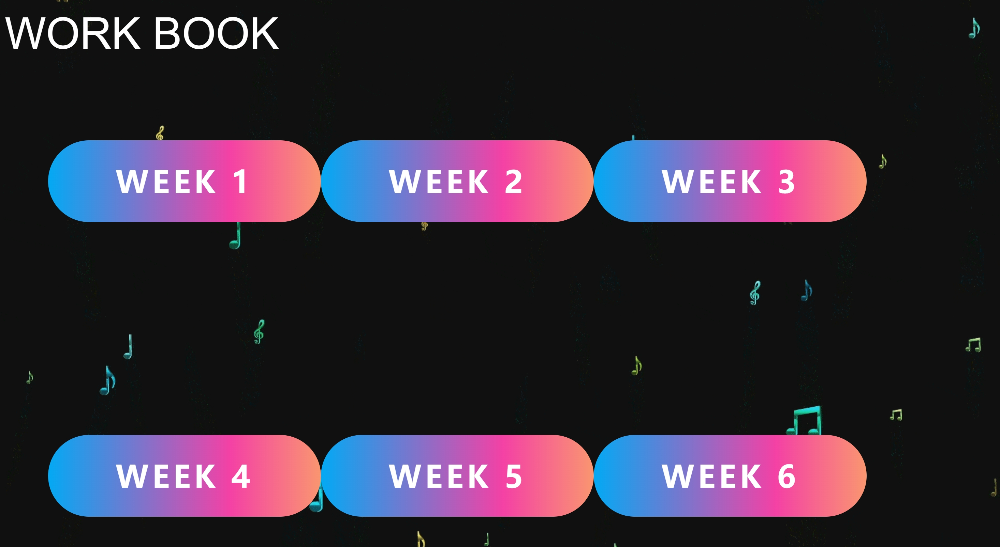
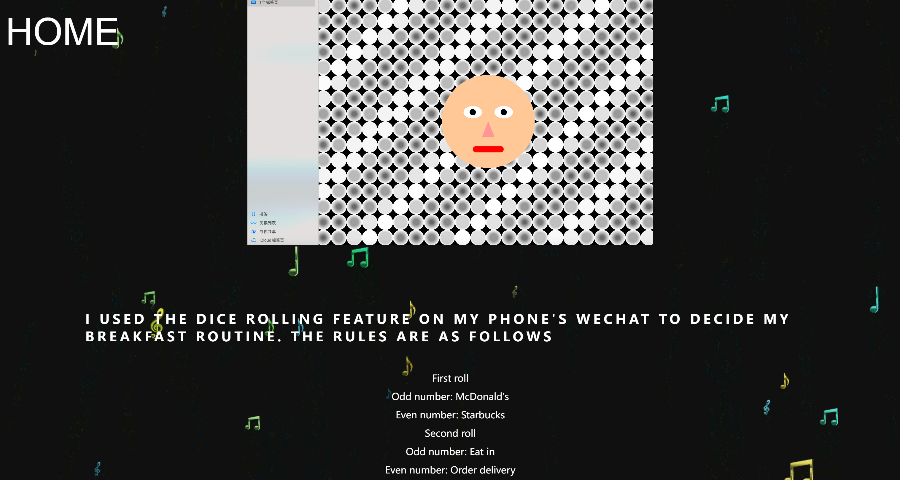

WEEK 3
The development process of theworkbook
In the past two weeks, I've gained a rough idea of the webpage's appearance and created a simple sketch. Initially, I opted for a minimalist approach to design the webpage to enhance user accessibility and browsing experience. I decided to incorporate a musical theme as the primary color scheme, aiming to evoke feelings of comfort and relaxation for visitors, even though I didn't plan to include actual music. Consequently, I found a background video featuring floating musical notes, which I converted into a looping GIF animation. While searching for inspiration, I discovered a sleek button animation effect that appealed to me, so I promptly integrated it into the webpage. Throughout the production process, I encountered some challenges, such as button overlap issues, which I successfully resolved with assistance from ChatGPT.
    Streamer button reference: https://b23.tv/VB123fP background_music reference: https://pixabay.com/zh/music/search/%e6%ac%a2%e5%bf%ab%e7%9a%84%e8%83%8c%e6%99%af%e9%9f%b3%e4%b9%90/